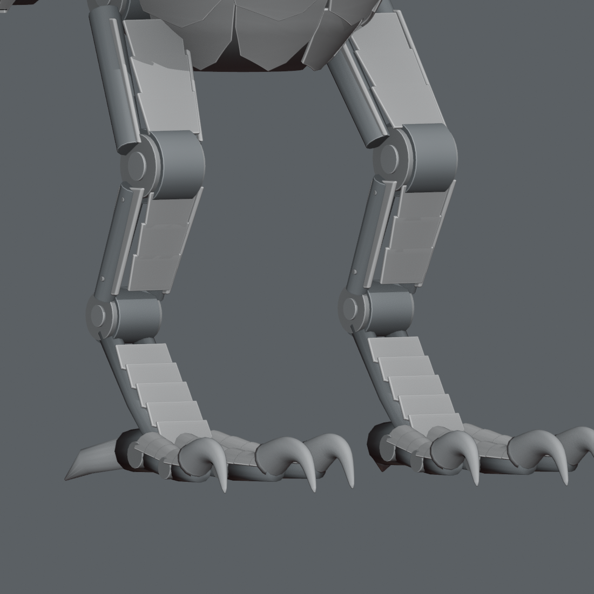
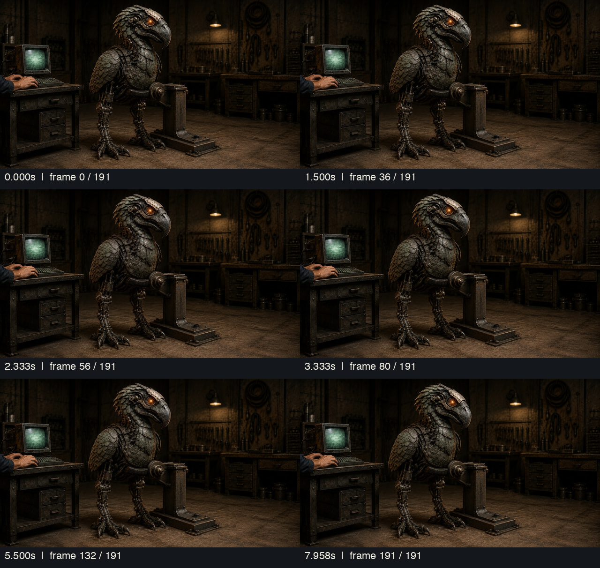
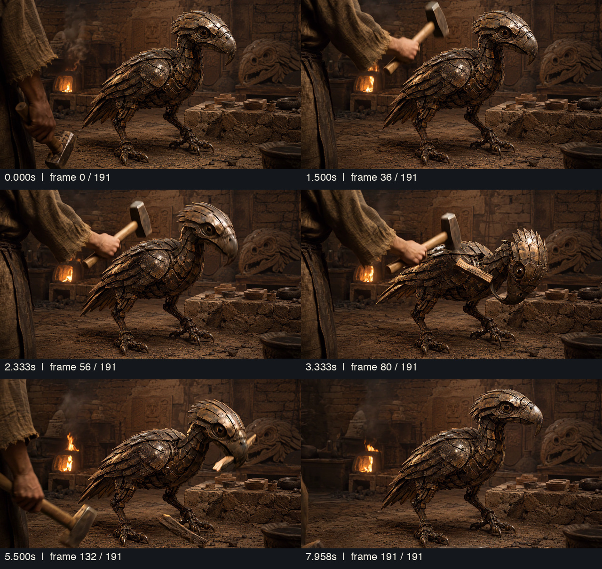
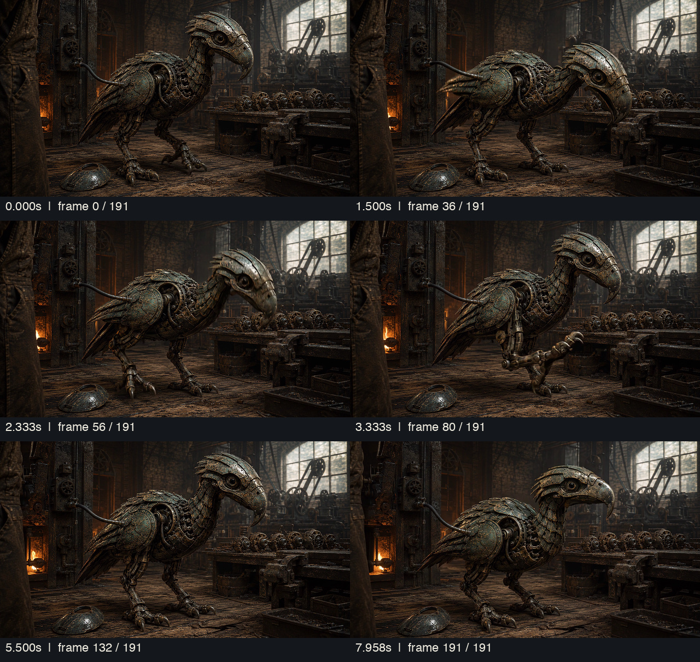
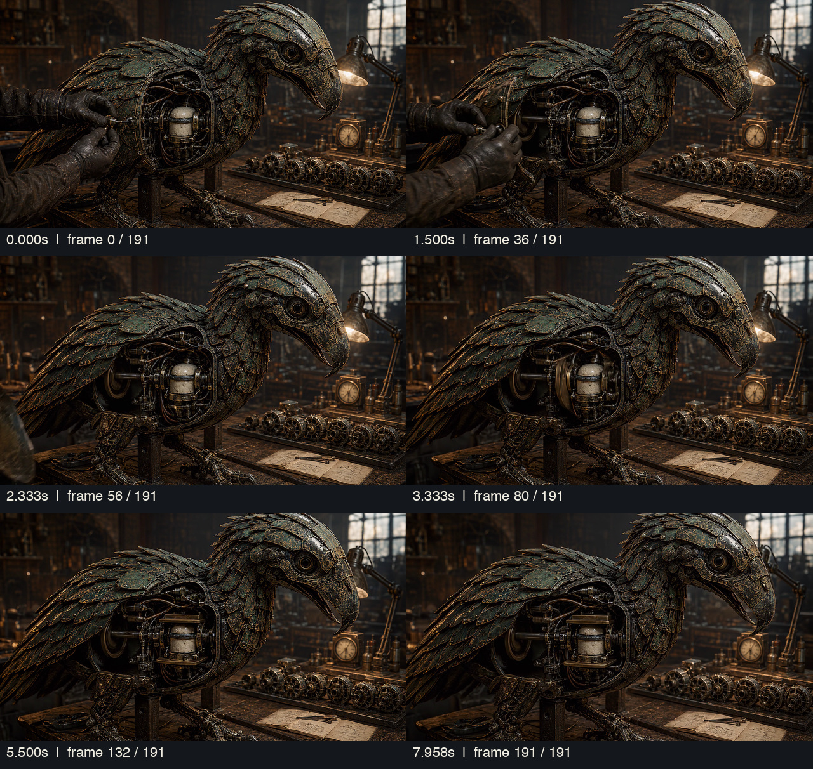

Shape first
Primitive chest, jaw and limb forms survive both authoring and browser renders. Shape the hero surfaces and preserve meaningful openings.
The gap is authored form, layered construction and material depth. The pictures describe a complete armored creature; the published model still describes an assembly of simplified parts.
This packet assesses appearance. It does not modify the model or approve anatomy, movement or final art. The parallel neutral study is shown separately from the published exterior.
Images are evidence, not new proposed artwork. Some source panels use a display crop; click any panel for the full original. Cameras and perspective are not metrically aligned.
Match the head–neck–breast flow and the compact folded mantle before adding finer texture. More bulk everywhere would be the wrong correction.

Candidate 03: visible body identity. Unseen construction remains a proposal.

Broad simple forms, separate wing bulges and exposed leg cylinders.

Better coverage and taper. Clay study; repeated plates and sparse limbs remain.
The bill root, brow, cheek, optic recess and crown are a connected design. An orange disk and a hooked bill do not establish the likeness by themselves.

Head only: deep bill, shaped cheek, recessed optic and swept crown.

Helmet, wedge, button optic and pipe-like jaw dominate.

Improved hook and coverage; large cheek void and generic plate rhythm persist.
The reference has open mechanical legs. The missing work is shaped casing, nested fittings, joint transitions and talon construction—not covering every opening.
Nested joint surrounds, segmented toes and dark talons. This is visible design evidence, not measured anatomy.

Smooth members and separate toe-top plates expose the construction primitives.

More shaped toes and hooks; limb casing still needs individual design.
Direct file inspection. The combined three-era geometry contains 187,957 triangles. Missing baked occlusion does not mean rendered shadows are absent.
Primitive chest, jaw and limb forms survive both authoring and browser renders. Shape the hero surfaces and preserve meaningful openings.
Crown blades, throat courses, breast panels and folded-wing plates need distinct size, sweep and overlap. One repeated scallop cannot describe the entire bird.
Current relief and patina follow reusable UV tiles. Author wear, cavity and roughness fields that correspond to real parts, seams and service history.

Use its exterior hierarchy; the current direction limits age and excludes water deposits.

Retain the plated creature and add local repairs. Historical video body/wing cues are not all current authority.
Maker → Mechanic → Advanced should preserve one inherited creature. Early optics stay dark. The new clay study is not judged as a completed material pass.
Six timestamped samples from each clip. Full decodes passed; these samples establish appearance evidence, not continuous motion acceptance.

Layered breast, curved plated neck, covered shoulder and framed leg mechanisms. This is the exact silent clip accepted for the story page; it does not approve a 3D rig or attack animation.
These clips remain held/rejected for revised-film continuity. Their surface language is contextual. Heart's power-unit framing changes across the sampled sequence, so it cannot establish fixed internal topology.



Name the source for each visible feature. Mark unseen construction as proposed.
Head, neck and shoulder in a new editable version. Pass likeness in clay first.
Author distinct regional plate families around the agreed structural envelope.
Deliberate UVs, authored relief, local cavity and wear masks, material separation.
Fabrication, aging and repairs, then selective Advanced additions.
Neutral and exhibit light, turntable, supplied motion extrema and model-derived fallback.
Recognizable clay silhouette. Constructed face. Distinct plate families. Real depth under neutral light. Materials that separate under a moving highlight. Continuity through rotation and supplied extreme poses. Authoring-to-WebGL parity, plus a separate fallback check.
These are proposed gates. No likeness pass, future model validation, performance result or publication is claimed by this packet.